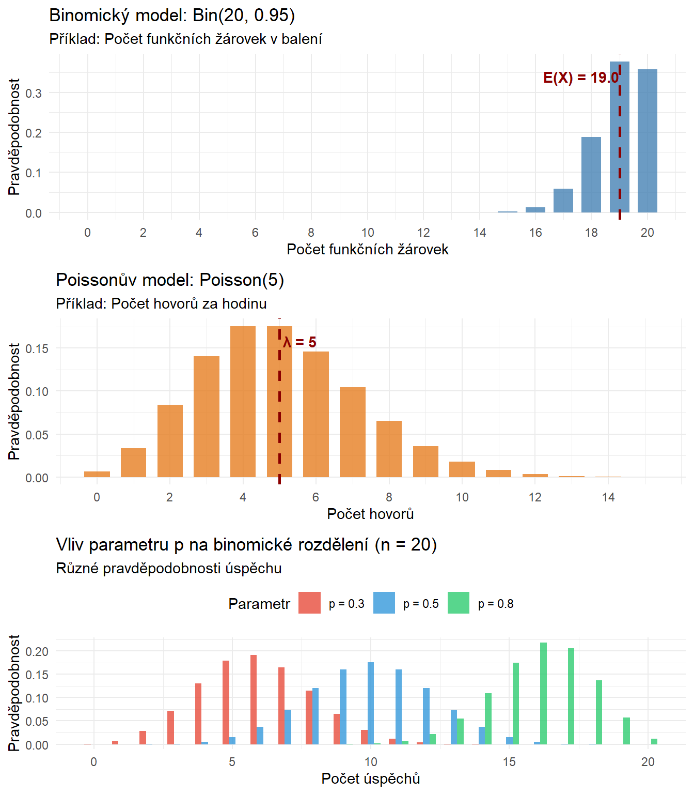

Zobrazit kód
library(ggplot2)
library(gridExtra)
# Binomický model - příklad s žárovkami
n <- 20 # počet žárovek v balení
p <- 0.95 # pravděpodobnost funkční žárovky
x_binom <- 0:n
prob_binom <- dbinom(x_binom, size = n, prob = p)
data_binom <- data.frame(
x = x_binom,
probability = prob_binom
)
p1 <- ggplot(data_binom, aes(x = x, y = probability)) +
geom_col(fill = "steelblue", alpha = 0.8, width = 0.7) +
geom_vline(xintercept = n * p, linetype = "dashed",
color = "darkred", size = 1) +
annotate("text", x = n * p - 3, y = max(prob_binom) * 0.9,
label = sprintf("E(X) = %.1f", n * p),
fontface = "bold", color = "darkred", hjust = -0.1) +
labs(
title = "Binomický model: Bin(20, 0.95)",
subtitle = "Příklad: Počet funkčních žárovek v balení",
x = "Počet funkčních žárovek",
y = "Pravděpodobnost"
) +
scale_x_continuous(breaks = seq(0, 20, 2)) +
theme_minimal()
# Poissonův model - příklad s hovory
lambda <- 5 # průměrný počet hovorů za hodinu
x_poisson <- 0:15
prob_poisson <- dpois(x_poisson, lambda = lambda)
data_poisson <- data.frame(
x = x_poisson,
probability = prob_poisson
)
p2 <- ggplot(data_poisson, aes(x = x, y = probability)) +
geom_col(fill = "#E67E22", alpha = 0.8, width = 0.7) +
geom_vline(xintercept = lambda, linetype = "dashed",
color = "darkred", size = 1) +
annotate("text", x = lambda, y = max(prob_poisson) * 0.9,
label = sprintf("λ = %d", lambda),
fontface = "bold", color = "darkred", hjust = -0.1) +
labs(
title = "Poissonův model: Poisson(5)",
subtitle = "Příklad: Počet hovorů za hodinu",
x = "Počet hovorů",
y = "Pravděpodobnost"
) +
scale_x_continuous(breaks = seq(0, 15, 2)) +
theme_minimal()
# Porovnání různých parametrů binomického rozdělení
data_binom_comp <- data.frame(
x = rep(0:20, 3),
probability = c(dbinom(0:20, 20, 0.3),
dbinom(0:20, 20, 0.5),
dbinom(0:20, 20, 0.8)),
parameter = rep(c("p = 0.3", "p = 0.5", "p = 0.8"), each = 21)
)
p3 <- ggplot(data_binom_comp, aes(x = x, y = probability, fill = parameter)) +
geom_col(position = "dodge", alpha = 0.8, width = 0.7) +
labs(
title = "Vliv parametru p na binomické rozdělení (n = 20)",
subtitle = "Různé pravděpodobnosti úspěchu",
x = "Počet úspěchů",
y = "Pravděpodobnost",
fill = "Parametr"
) +
scale_fill_manual(values = c("#E74C3C", "#3498DB", "#2ECC71")) +
theme_minimal() +
theme(legend.position = "top")
gridExtra::grid.arrange(p1, p2, p3, ncol = 1)